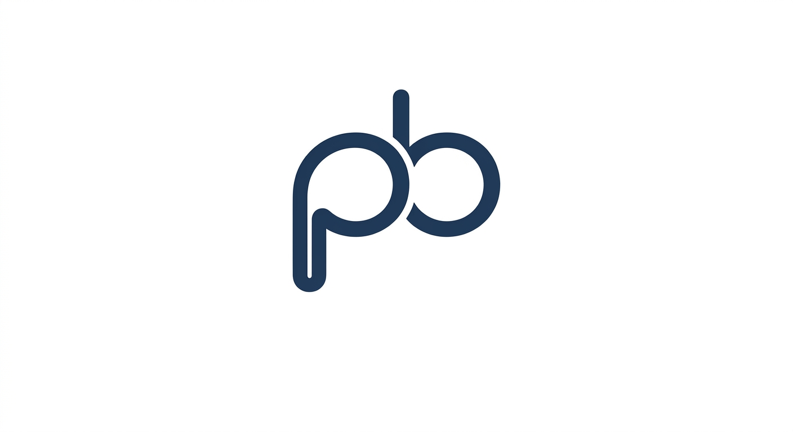

I’m Pratik Bhandari, an Information Technology student with a strong interest in web development and technology. I enjoy learning new skills, exploring how technology works, and building practical projects that can solve real-world problems. I’m currently developing my knowledge in programming, software development, cloud computing, and other areas of IT. My goal is to grow as a skilled and reliable IT professional by continuously learning, practicing, and gaining real-world experience.
I have a growing foundation in programming, web development, and information technology. My current skills include C#, C++, HTML, CSS, basic JavaScript, Python, and SQL. I also have basic knowledge of cloud computing and AWS, along with an understanding of software development and problem-solving. I’m continuously improving my technical skills through coursework, practical projects, and hands-on learning.
I have worked on several academic and personal projects to apply my IT knowledge in practical ways. Currently, I am working on ShikshyaConnect, a platform concept designed to help colleges find suitable teaching staff based on their requirements. I have also worked on an AWS S3 static website hosting project and my personal portfolio website. Through these projects, I am developing my skills in web development, cloud computing, software engineering, and problem-solving.
I’m always open to connecting, learning, and exploring new opportunities in the field of technology. If you have a project, internship opportunity, or simply want to connect, feel free to reach out to me. I’d be happy to hear from you and discuss how we can connect and work together.